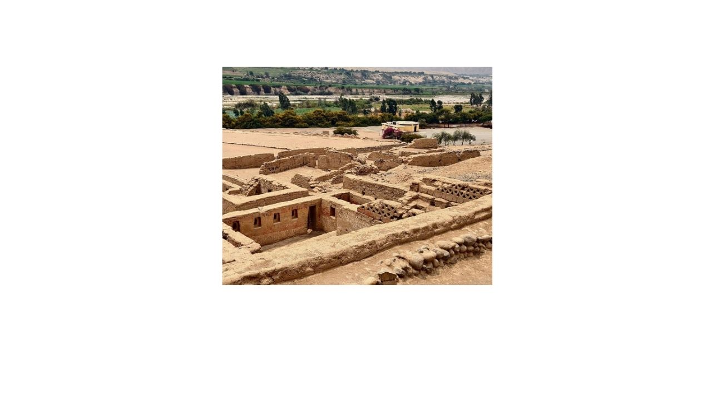

Cruise Shore Excursions


Exclusive Shore Excursions Departing from Pisco Harbor (Paracas)
Customizable, intimate tours with marine wildlife and Inca sites
Detail
Book your shore excursion directly with us for the best value. Our tour advisor will gladly assist with questions and availability. We offer customizable half-day or full-day tours tailored to your group, managed by our English-speaking staff. Enjoy a more intimate experience away from the crowds, with South Americans Secrets ensuring safe and timely return to your ship. Our excursions include marine wildlife watching, exploring ancient Inca sites, and visiting protected nature areas.
Activities:
- - Nazca lines flight
- - Tambo Colorado ( Inca ancient site)
- - wildlife watching
- - Paracas nature Reserve
- - Pisco distillery and winery Valley.
Include:
- Pickup and dropoff directly from port/harbor
- All entrance fees
- Harbor tax
- Personal insurance in case of injuries
- Private transportation.
- Professional English guide
Not Include:
- Extras & gratuities.
Price:
$Consult
Book Now